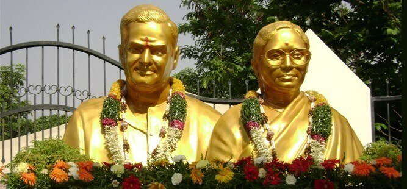

THE FOUNDATION
Late Sri. Nandamuri Taraka Ramarao was the former chief minister of Andhra Pradesh and his wife, Smt. Nandamuri Basavatarakam, herself was an unfortunate victim of cancer and in whose memory this Hospital was built.
About Us
Welcome to Basavatarakam Hospitals, a leading multispecialty healthcare institution in Andhra Pradesh, dedicated to providing world-class medical services with compassion and care. We are committed to offering a broad spectrum of healthcare services, including advanced diagnostics, specialized treatments, and preventive care.
With over 24 years of experience in the healthcare industry, we take pride in our state-of-the-art facilities and a team of highly qualified medical professionals who are passionate about improving the health and well-being of our patients. From cardiology and neurology to women’s health and fertility, we offer comprehensive treatment options in collaboration with the latest technologies and international medical protocols.
At Basavatarakam, we believe in raising the standards of healthcare by bringing European health expertise to India, ensuring that every patient receives the best care possible. Our facilities include over 500+ beds, 100+ operations annually, and dedicated centers for excellence in various specialties like Oncology, Gastroenterology, Cardiology, and more.
Our mission is to deliver the highest quality medical care while providing comfort and compassion to patients from all over the world. Whether you’re looking for routine check-ups, advanced surgeries, or specialized care, Basavatarakam is your trusted partner in health.
MISSION
To Provide treatment for low cost and more effective
VISSON
To develop BIACH & RI as a premier Institution for the Cancer Research and Treatment in the Country.